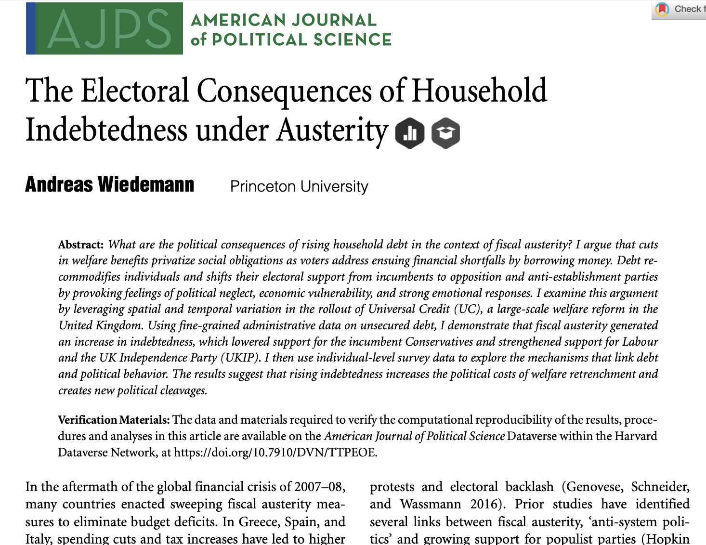
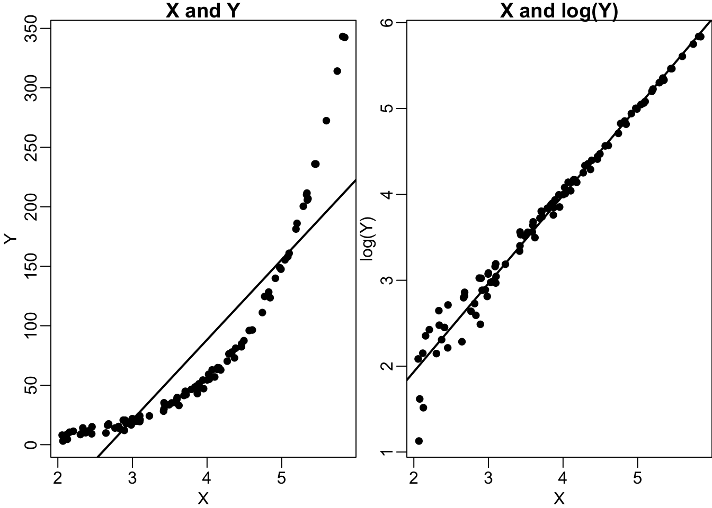

flowchart TD
A[Welfare cuts] --> |Borrowing money\nto address financial\nshortfalls| C[Indebtedness]
C --> |Recommodification\nof the individual| D[Emotional response:\nFeelings of\npolitical neglect and\neconomic vulnerability]
D --> |Change in\npolitical behaviour| E[Shifts in electoral support\nfrom incumbents to opposition\nand anti-establishment parties]
5 How to read a research article
How do you read a research article published in a Political Science journal? This can be a daunting task as modern Political Science is often technical and the text can be dense, full of unfamiliar terms and references.
In this exercise, we will look into recent articles published in leading academic journals. Our focus will be on articles that tackle empirical questions. Recall that the tools we are learning in this module are suitable for empirical research questions. Studies that are purely theoretical in their approach and/or that tackle normative questions (e.g., political philosophy or ethics) are beyond our scope.
This does not mean that empirical research is not based on theory. You need a preliminary explanation to tackle an empirical question. This particular explanation comes from your theoretical framework. Theory always has a purpose and our purpose in empirical research is to provide a cogent explanation to the question we are studying. In other words, theory is always there and we need to lay it out as clearly as possible.
Most research articles come in this organizational format:
- Title and abstract
- Introduction
- Literature review
- Theory
- Research Design
- Empirical Analysis
- Conclusions
Some articles can be slightly different. For example, the literature review and theory can be blended together under one (or multiple) sections. Some articles may have additional sections for describing their cases or for additional empirical tests or discussions. Nonetheless, the general shape we outlined above is virtually universal for all empirical research articles.
Demonstration: Wiedemann 2024
We look into the Electoral Consequences of Household Indebtedness under Austerity by Andreas Wiedemann. You can download the article here: https://doi.org/10.1111/ajps.12708. It should be open access, but in case it is not, you can gain access through your institution by using your University credentials.

We will go over the article in detail, starting with the abstract.
5.1 Abstract
The article starts with a general question:
What are the political consequences of rising household debt in the context of fiscal austerity?
This is a clearly formulated question. From this question, we can guess the main explanatory variable, the rising household debt. After reading the first sentence, I have a very good idea that this article will study the impact of the rising household debt.
The impact on what, though? As I mentioned, this opening question is general, so the outcome variable is still a little vague. The article will look into the political consequences, but this can be anything. We need to be patient and read more.
Let’s look at the next two sentences:
I argue that cuts in welfare benefits privatize social obligations as voters address ensuing financial shortfalls by borrowing money. Debt recommodifies individuals and shifts their electoral support from incumbents to opposition and anti-establishment parties by provoking feelings of political neglect, economic vulnerability, and strong emotional responses.
The theoretical argument is fully laid down here. It is a dense statement, but the theoretical mechanisms are formulated clearly. Let’s try to sketch the theoretical framework using a flowchart (see Figure 5.2).
This is the theoretical framework of the article! We also have a very good idea of the outcome variable now: vote choice. Or, more precisely, the vote share of the incumbent, opposition and anti-establishment parties.
The article expects to find a relationship between indebtedness and support for opposition/anti-establishment parties.
Let’s continue:
I examine this argument by leveraging spatial and temporal variation in the rollout of Universal Credit (UC), a large-scale welfare reform in the United Kingdom. Using fine-grained administrative data on unsecured debt, I demonstrate that fiscal austerity generated an increase in indebtedness, which lowered support for the incumbent Conservatives and strengthened support for Labour and the UK Independence Party (UKIP).
Here, the article is summarizing the empirical analysis. It tests its arguments using data from the UK. We now have a good idea on the empirical analysis and measurement.
Let’s unpack. Consider the theoretical concepts, and corresponding measurement. How does the article measure these concepts?
Concept: measurement
Cuts in welfare benefits: variation in the rollout of Universal Credit (UC)
Increasing debt recommodifies individuals: fine-grained administrative data on unsecured debt (increase in indebtedness)
feelings of political neglect, etc.: ? [still unclear]
shifts in electoral support from the incumbent to opposition and anti-establishment parties: support for the incumbent Conservatives and support for Labour and the UK Independence Party (UKIP).
We have moved from abstract concepts to tangible measurement. Yet, #3 is still undefined. Let’s continue.
I then use individual-level survey data to explore the mechanisms that link debt and political behavior. The results suggest that rising indebtedness increases the political costs of welfare retrenchment and creates new political cleavages.
Ok, now the article tells me that there is a second study. This is a survey and it is at the individual-level. Is it possible that this is how it is going to capture the feelings of individuals? Based on the theoretical framework, the mechanisms that link debt and political behavior must refer to feelings of political neglect.
If we re-read the previous sentences, we can also capture that there are at least two main studies, one is at the administrative level, and the other one is at the individual-level.
By just reading the abstract, we have learned a lot about this article! Some parts are still unclear, but we have a very good idea of what to expect.
We can also understand that this is an observational study. The empirical analysis is based on observational data. There is no mention of an experiment.
Tip: Skim the article first
Before reading any further, I would quickly skim the whole article. Focus on the section titles, organization, figures and tables.
5.2 Introduction
The first three paragraphs quickly get us into the heart of the question: the political consequences of austerity. These paragraphs also engage with the literature and present a research gap.
In the fourth paragraph, the article introduces its contribution.
This article brings a different perspective to this literature by focusing on individuals’ responses to cuts in public spending as a key factor that shapes political behavior.
The focus is on the underlying mechanisms that link austerity/welfare cuts and political behaviour:
Despite the potential gravity of rising household debt, we have little systematic knowledge of the political consequences of borrowing money to fill financial gaps and the underlying mechanisms of these effects.
Afterwards, this paragraph presents a concise summary of the theoretical framework.
I argue that … [THEORETICAL FRAMEWORK SUMMARIZED]
In the fifth paragraph, starting with “I examine my argument …”, the article turns to testing the implications of the theoretical argument empirically. A brief summary of the case the article is going to analyze is presented: the UK, introduction of the Universal Credit, and increase in the household debt.
Linking the cuts in welfare (i.e., the rollout of the Universal Credit) and the increase in household debt is an important component of the article. This is a key causal chain of the theory:
flowchart LR
A[Welfare cuts] --> B(Borrowing money\nto address financial\nshortfalls) --> C[Indebtedness]
The article tries to establish this link empirically:
As I will document, households respond to cuts in social benefits by borrowing money to address financial shortfalls and pay for essential goods and services.
Next two paragraphs unpack the empirical strategy. Starting with:
I provide three types of empirical evidence to support the links between social spending cuts, indebtedness, and electoral behavior.
This is a nice placeholder. The reader now knows what to expect. There are three steps in the causal chain. I expect at least three pieces of analysis to test each mechanism.
First, I leverage spatial and temporal variation in the rollout of UC, combined with novel administrative data on personal unsecured loans at the postcode sector level, to estimate the effect of welfare retrenchment on household indebtedness.
This sentence summarizes the first study analyzing the relationship between austerity and household indebtedness. It also tells that this part is at the postcode sector level. It is akin to a study at the neighbourhood level. There is some aggregation. I expect that you cannot access individual-level data on debt (because of privacy reasons), but data is available on an aggregated level.
Looking into variations in \(X\) plays a key role in analyzing changes in \(Y\). In this respect, the article looks at the different pace with which Universal Credit was introduced in different localities. This is the variation in \(X\) (for the first study). The article also looks at the variation in \(Y\) (for the first study), referring to different levels of indebtedness in a locality. Is there a relationship between shifts to the less generous Universal Credit scheme and indebtedness?
flowchart LR A[Shift to Universal Credit] --> B[Indebtedness]
The following sentences in this paragraph are a little bit too detailed for our purposes. Let’s say that we didn’t understand them, but we don’t need to get stuck on this because we acquired the main message of the article here:
I show that one additional UC benefit recipient in a postcode sector increases unsecured debt by an average of £665.
This sentence conveys the message that the article empirically links welfare cuts and the level of indebtedness.
Let’s continue with the next paragraph.
Second, I study how indebtedness affects constituency-level electoral behavior in the 2015, 2017, and 2019 UK general elections.
Now, we are in the second mechanism in the causal chain.
Austerity-induced indebtedness, measured by the variation in unsecured debt induced by UC rollout, increases political participation, lowers vote shares for the incumbent Tories and the Liberal Democrats, and strengthens support for the opposition Labour party and UKIP.
As we emphasized, looking into variations in \(X\) plays a key role in analyzing changes in \(Y\). In this respect, the article studies whether there is a relationship between indebtedness and vote share. Note that this is the second study, where the explanatory variable is indebtedness and the outcome variable is the vote share of the incumbent.
flowchart LR A[Indebtedness] --> B[Vote Share]
Following sentence:
I substantiate these results with individual-level data from the British Election Study (BES).
This is an unexpected addition: there is a second study to strengthen the second mechanism. This can be thought of as ‘study 2(b)’. It is at the individual-level, meaning that it is based on responses of individuals to the BES survey. Do we see a link between indebtedness and vote-choice in the BES data? The article looks into this and reports that it establishes a relationship:
Respondents who report that they have taken out loans to pay for essential goods and services– which indicates borrowing during times of financial distress – are more likely to turn out to vote and punish the Tories and cast their ballots at higher rates for Labour and UKIP.
The first paragraph of page 356 discusses the third piece of empirical evidence:
Finally, I examine several mechanisms that help explain how rising indebtedness caused by fiscal austerity measures affects political behavior. Using survey data from the BES, I show that debtors – particularly those who borrow money for essential goods and services – are more worried about their economic security, demand a stronger social safety net, and feel unequally treated and politically neglected. Debtors feel particularly angry and resentful toward the Conservative party and more hopeful toward Labour.
This final set of empirical evidence is about establishing a link between indebtedness and emotional response. Recall that this is a crucial step in the causal chain:
flowchart LR A[Indebtedness] --> B[Emotional Response]
In the final paragraph of the introduction, the article highlights its contributions and summarizes its findings and conclusions. Let’s look at the final sentence:
The article’s findings suggest that voters are not necessarily loyal partisans but respond to policy changes and form electoral choices based on their personal interests. Debt is an increasingly salient factor that influences political behavior.
Let’s end with three important warnings!
1. Introduction is probably the most important part
All you need to learn about this article is concisely presented in the introduction.
This is not fictional writing: there are no plot twists and no hidden secrets saved for later.
All the main parts are laid out here. Introduction is a mini version of the whole article!
2. Pay attention to citations
Look at how the article engages with the literature and how it cites sources. Check the bibliography.
I encourage using this style for citations and the bibliography. They are called in-text citations. It is a brief way to cite, without wasting too much of word-count. The format is clear: (Author, Year).
There are no long ‘filler’ sentences masked as citations. Sometimes students write long filler sentences that are clearly aimed at reaching a target word count. A hypothetical example:
Charles Robert Darwin, who was an influential naturalist and biologist, published a seminal book through the John Murray publishing house on 25 November 1859, titled ‘On the Origin of Species by Means of Natural Selection, or the Preservation of Favoured Races in the Struggle for Life’, which introduced the theory of evolution to a larger audience.
You will lose points if you write like this. Instead, convey your message clearly:
Darwin (1859) introduced the theory of evolution.
You can use this article as a guideline for citation rules.
Also, look at the end of the first paragraph (on the first page). Newspaper sources are cited via a footnote. This is because newspapers are different from scholarly sources. Using (Author, Year) would be awkward, so the article switches to footnote for citing these newspaper sources. This is perfectly fine for popular/non-academic sources (newspaper, website, twitter/social media, etc.) and makes the text more accessible.
3. Style and organization are important
Pay close attention to the writing style. This style is common in academic and professional writing.
The text is well-written and well-organized. It is easy to understand and navigate. There are no extremely long or convoluted sentences. The text is organized under sections and subheadings. A well-organized text helps the author guide the reader toward the core points and convey the message as intended.
The writing style is formal but accessible. The tone is professional, but the author does not shy away from using ‘I’. First-person writing is fine. Let’s see a sentence from the article:
I argue that cuts in welfare benefits privatize social obligations as voters address ensuing financial shortfalls by borrowing money.
This sentence clearly conveys the message of the article. It is excellent.
This is first-person writing, but not personal writing. What do I mean by personal writing? Let’s see an example:
I have always been interested in welfare cuts and their impact on political behaviour as I lived through the austerity measures.
This sentence does not tell me much. It just insinuates a personal connection without any substance.
Personal writing is fine in many contexts, including some professional contexts such as a cover letter, but it might not be the best approach in an empirical research paper (unless you are using the method on purpose, as in some qualitative methods).
5.3 Literature Review and Theory
This article does not have a designated ‘literature review’ section, but it does melt its review of the literature into multiple sections, most notably the second section.
The second section, Privatizing Social Obligations: The Electoral Consequences of Indebtedness, both reviews the literature and fully presents the theoretical framework. We already had a very good idea of the theory, but the details are further explained here.
The opening sentence is a general question. Recall the lecture where we discussed research questions. I emphasized that we usually start with a general, larger question and slowly narrow it down to a more specific question. A similar approach is adopted here to introduce the main question:
Why people turn out to vote and why they decide to punish or reward incumbents at the ballot box are important questions for effective governance and democratic accountability.
A concise but informative review of the literature follows this sentence. In the next paragraph, the article turns to its proposed explanation. It highlights the differences in its approach:
This article offers a different perspective on these questions to cuts in public spending as a critical factor that shapes political behavior more generally. Prior work largely overlooks citizens’ responses to cuts in public spending as a critical factor that shapes political behavior more generally.
Starting with the next paragraph, the article presents its theoretical framework: “I argue that the rise …”. In this paragraph, I would like to highlight one sentence that captures the core of the argument:
This individualization and privatization of social obligations turns some voters into debtors and undermines electoral support for incumbents while strengthening voting for opposition parties, including the far-right.
Pay attention to such key sentences. They tend to come in the first two sentences of a paragraph.
The next paragraph (the first one on page 357) tells that this privatization of social obligations “has several reinforcing political consequences.”” Several is an important word here, because it signals that an enumeration of causal mechanisms will follow. Indeed, the next sentence starts with “First”. Such sentences are important markers:
First, it changes people’s perception of the role of government and fuels their sense of political neglect and unequal treatment as they go into debt.
Second, debt makes salient the inadequacy of the welfare state and declining social support.
Finally, by increasing feelings of political neglect, status threat, and economic insecurity, the privatization of social obligations triggers emotional responses among people who go into debt to make ends meet. Anger is a particularly powerful emotion.
The theoretical framework is fully laid out. The article now turns back to engaging with previous research because its main argument runs contrary to some established findings in the literature. The paper clearly acknowledges this and tackles it head-on, starting with:
Research has shown that individuals who experienced adverse life events and economic crises are less likely to vote (Bartels 2013; Ojeda, Michener, and Haselswerdt 2020). I argue, however, that borrowing money can increase political participation in two ways.
Although there is no designated section for a literature review, it is baked into the article, mostly apparent in the introduction and the theory.
The next section takes us to research design and analysis.
5.4 Fiscal Austerity and Indebtedness in the United Kingdom
This part explains the case under analysis: the United Kingdom. A short and precise summary is provided. Next, the text focuses on how the Universal Credit was introduced, which created variations across different localities.
The government introduced UC gradually over several years across different jobcentres in Great Britain.
Because rollout occurred on a jobcentre-by-jobcentre basis, progress varies considerably between postcode areas (Kennedy and Keen 2018). The variation in the rollout of UC over time and across areas offers a unique opportunity to study the consequences of fiscal austerity on indebtedness and, in turn, electoral behavior.
Under the section “Data and Measurement”, the paper explains its data sources.
The first data source is about indebtedness. This source is explained in detail:
the UK government, the British Bankers Association and the Council for Mortgage Lenders reached an agreement in 2013 that major banks would report quarterly lending data at the postcode sector level to improve transparency about lending locations. A postcode sector has the final two letters of a full postcode removed. These data, published quarterly since 2013, include the level of outstanding personal loans. I obtain these data on the geographic distribution of unsecured personal loans from UK Finance, the trade association for the UK banking and financial services sector. It covers 9292 unique postcode sectors. I aggregate postcode sectors into four-digit postcode districts, the lowest level of geography for which data on UC beneficiaries is available,
The main outcome variable is the vote choice. This paper studies UK general elections (2015, 2017, 2019):
Parliamentary constituency–level results for the 2015, 2017, and 2019 UK general elections come from Pippa Norris’s British Parliamentary Constituency Database.
How to measure welfare cuts? They are measured by looking at the differences between the Universal Credit rollout. The Department for Work and Pensions (DWP) is the source of this data:
Data on UC rollout come from the DWP, which collects information on the number of people on UC at the postcode district and parliamentary constituency levels.
5.5 Analysis
The analysis starts with the section ‘Descriptive Patterns’. Here, the article provides descriptive statistics and summaries of the data. Note that numerical and visual summaries are presented.
Look at the tables and figures. Pay attention to the presentation. They are numbered, and they have titles and captions. This style is important.
Studying the relationship between variables of interest starts with the section “Welfare State Retrenchment and Indebtedness”. A regression model to “estimate the effect of the UC rollout on unsecured debt” is presented.
In this part of the analysis, \(UC_{it}\) is the explanatory variable:
\(UC_{it}\) is the number of UC recipients in postcode district i and quarter-year t.
The outcome variable, \(Y_{it}\), is the log of the average unsecured household debt, where \(i\) refers to locality (postcode district level) and \(t\) refers to time (quarter-year).
What is a log transformation? It refers to a logarithm (in case you want to check more: https://en.wikipedia.org/wiki/Logarithm). The details are not relevant for us, but we can capture the essence. Taking the log of a number makes it smaller.
Let’s see an example:
# some numbers:
nums <- c(10, 100, 1000, 10000)
nums[1] 10 100 1000 10000# let's see their logs (base 10):
log(nums, base = 10)[1] 1 2 3 4Why are we doing this? Recall our discussion on income/wealth. There can be extremely wealthy individuals. When the data is spread over a wide spectrum with extremely high/low values (i.e., the data is skewed), we might want to address this. Here, taking the logarithm of a variable comes in handy.
Imagine that there are three people: Alice, Bob, and Eve. Their net worths are, respectively, £10 thousand, £1 billion, and £10 billion. If we do not do any transformation, the respective wealths of Alice and Bob are closer to each other than that of Bob and Eve. The difference between Alice and Bob’s wealth is £999 million 990 thousand, while the difference between Bob and Eve’s wealth is £9 billion. So, can we say that Alice and Bob are similar and Eve is super-rich? Not really. In reality, Bob and Eve are super-rich billionaires; they are more alike. Let’s take their logarithms.
# wealth of three individuals
wealth <- c(
10^5, # 10 thousand
10^12, # 1 billion
10^13 # 10 billion
)
# take the logarithm
log(wealth)[1] 11.51293 27.63102 29.93361After taking the logarithm, the billionaires (Bob and Eve) are closer to each other with ‘27.63’ and ‘29.93’ units of wealth, respectively.
Taking the logarithm of a variable can also make relationships look more linear. Let’s see an example.

Let’s continue reading the article. We don’t need to understand all the details; we are trying to achieve a general understanding.
A regression analysis is carried out. We are not going to get stuck in the technical details. The technique employed here is called a “difference in differences”, which we have not covered in the module (textbooks assigned as further readings have chapters on this technique). In simple terms, it compares the average change in indebtedness in localities where Universal Credit is not introduced yet with the average change in indebtedness in localities where Universal Credit is introduced.
For example, imagine two localities: Norwich and York. In time \(t\), both Norwich and York do not have Universal Credit. In time \(t + 1\), Norwich goes into Universal Credit whereas it has not been introduced in York yet. We calculate the difference in indebtedness in Norwich before and after Universal Credit. This is our first difference. We also calculate how indebtedness changed in York between time \(t\) and time \(t + 1\). This is our second difference. Finally, we compare these two differences. This is why it is called ‘difference in differences’. Maybe indebtedness increased in both places, but if it is increased more in Norwich than York, could it be possible that it is due to Universal Credit?
I want to highlight one sentence here, on page 361:
The identifying assumption is that no time-varying confounders affect the relationship between UC rollout and debt, such that changes in the number UC recipients are exogenous to changes in unsecured debt over time.
This sentence is a little bit hard to crack, but it essentially states that there are no confounding variables (\(Z\)). The reverse of exogenous is endogenous, which refers to confounders where a \(Z\) variable affects both \(X\) and \(Y\). In this regard, the article argues that there is no such \(Z\) (see Figure 5.3).
graph TD
Z --> X(X: UC rollout)
Z --> Y(Y: Debt)
In simple terms, the reason behind the different pace of implementing Universal Credit in different localities (\(Z\)) is no way connected to debt (\(Y\)), then we can consider that higher increase of indebtedness in Norwich than York is due to the introduction of Universal Credit.
Obviously, we don’t do it only for our imagined example of Norwich and York, but for all localities and look at the average change.
Next paragraph summarizes the results from a regression analysis:
The results in Table 2 show that UC rollout significantly increased the amount of unsecured debt in a given postcode district. […] unsecured debt increases by about £685 for every additional person receiving UC. With average weekly gross pay in Great Britain of about £511, this is a sizeable effect.
This section continues with some additional analysis to see how robust this result is to alternative modelling strategies. However, the main result stays intact: the indebtedness in a locality increases following the introduction of Universal Credit.
Electoral Consequences of Indebtedness under Fiscal Austerity
The first sentence of this section is a restatement to remind the reader what the argument is. Such repetitions and restatements are necessary for organizing the text:
Fiscal austerity privatizes social obligations and recommodifies individuals through debt. As a result, I argue that borrowers shift their electoral support from incumbents to the opposition because they feel politically neglected, economically vulnerable, and lacking of social support.
The following sentence tells us what to expect next:
This section examines how indebtedness affects political behavior with two complementary empirical strategies before presenting evidence on the underlying mechanisms in the next section.
Recall that the analysis has three components:
- Universal Credit \(\rightarrow\) Unsecured Debt
- Unsecured Debt \(\rightarrow\) Political Behaviour
- Constituency-level (data: election results)
- Individual-level (data: the BES survey)
- Unsecured Debt \(\rightarrow\) Emotions (this is the mechanism through which unsecured debt influence political behaviour)
The article already presented the first analysis, and is turning to the second one, which has two sub-components.
(a) Constituency-Level Results
Again, we are not going to get stuck in technical details and march toward the main result. Starting with the analysis 2.a, the article explains that the analysis is at the constituency-level:
I study the effect of austerity-induced indebtedness on turnout and party vote shares in the 2015, 2017 and 2019 general elections
A regression analysis is carried out. Again, we are not going to get stuck in the technical details. Let’s try to clarify the outcome and explanatory variables (\(X\) and \(Y\)). The statement quoted above gives this information. The independent variable is the austerity-induced indebtedness. Note that this is not just indebtedness, austerity-induced indebtedness. This is estimated through the first study. When the article discusses two-stage regression, the first stage refers to estimating austerity-induced indebtedness.
For the outcome, the study analyze both the turnout and party vote share. In this regard, this stage has multiple dependent variables: the article will analyze the turnout and the party vote share of major parties (i.e., Tories, LibDem, Labour, UKIP).
In addition to outcome and independent variables, the article also discusses control variables. These are possible ‘confounders’ that may influence the variables of interest. Most importantly, we want to keep our units as similar as possible for meaningful comparison. See the following passage (on page 363):
\(X_{it}\) is a matrix of constituency-level covariates, including unemployment rates, mean annual gross pay for full-time workers, the share of individuals with a bachelor’s degree or higher, and the share of people 60 years and older. I further control for median house prices, which have been found to be associated with lower turnout (McCartney 2021) and voting for populist parties (Adler and Ansell 2020). House prices also serve as a proxy for local economic conditions, because a strong local economy can increase incumbents’ chances of re-election (Larsen et al. 2019). Homeowners are more likely to hold conservative views and less likely to support redistribution when house prices are rising (Ansell 2014).
The paragraph starting with “Figure 3 show the results” (on page 363) discusses the results. Look at Figure 3 and read this paragraph carefully. The last sentence of this paragraph contextualize the results:
A 10% increase in debt strengthens turnout by about 0.52 percentage points and reduces the vote shares for the Tories and Liberal Democrats by 0.69 and 0.96 percentage points, respectively. By contrast, the opposition parties gain electorally as austerity-induced debt rises. For a 10% increase in debt, the Labour party and UKIP gain 2.45 and 0.68 percentage points, respectively.
To summarize the constituency level findings, the turnout is higher in constituencies with higher levels of unsecured debt (induced by Universal Credit) than in constituencies with lower levels of unsecured debt. The respective vote shares of Tories and Liberal Democrats are lower in constituencies with higher levels of unsecured debt. Conversely, the vote shares of the opposition Labour and UKIP are higher in constituencies with higher levels of unsecured debt.
(b) Micro-Level Results
The article continues with what we have termed ‘study 2.b’, which refers to individual-level analysis. This section estimates an individual’s probability of voting (for a particular party). In simple terms, we are interested in the differences between those who have unsecured debt and those who don’t in terms of their voting behaviour. Do debtors behave differently from non-debtors when it comes to voting?
As we discussed in the lectures, we want to make these groups (debtors and non-debtors) as similar as possible except for their indebtedness, and compare their political behaviour. However, these two groups can be quite different in other aspects. The author acknowledges this problem and explains the steps they have taken to address it, namely considering other observable factors in the analysis:
\(X_i\) is a matrix of socioeconomic covariates that could confound the relationship between indebtedness and political behavior. I include age, education, income, number of children in the household, and dummy variables for gender, marital status, unemployed, student, retired, homeowner status, and union membership. I further control for respondents’ class status, which traditionally occupied a central position in British voting patterns.
Main results are discussed on page 364 and shown in Figure 4:
The left panel of Figure 4 shows that respondents who borrow money for essentials are 1.6 times more likely to turn out and vote, compared to those who do not borrow for essentials. They are considerably less likely to vote for the incumbent Tories (a 50% probability) and 1.5 times more likely to support Labour and 1.8 times more likely to support UKIP.
One more thing to highlight here: the article makes a distinction between ‘borrowing for essentials’ and more general borrowing (i.e., ‘unsecured debt’). ‘Borrowing for essentials’ is a subset of ‘unsecured debt’, but it is more relevant for the purposes of this study because those who had to borrow for essentials such as food are more likely to be hit by welfare cuts than those who borrowed to buy, for example, luxury consumption goods. The author argues that although the results are not that strong for general borrowing, there is a strong relationship between ‘borrowing for essentials’ and voting behaviour, which is exactly where the theoretical framework expects to find a relationship.
The article then turns to some other questions in the BES survey related to the welfare state, such as respondents’ views on cuts to local services and public spending.
Investigating the Mechanisms
In the penultimate section, titled Investigating the Mechanisms, the article presents the third component of the empirical analysis, which tackles the relationship between unsecured debt and emotional response. Recall that emotional response is a crucial mid-step in the causal chain (see Figure 5.2).
Apply the approach we have used so far to read the text. Do not get stuck in technical details and try to cut to the core of the argument and results. Focus on Figures 5, 6, and 7. Try to understand them as they visually summarize the results.
5.6 Discussion and Conclusion
This section begins with a concise summary of the article, highlighting the main arguments and findings. It is short and accessible, similar to an ‘executive summary’: readers who don’t go through the entire text can still grasp the key points by reading this first paragraph. It is where the author presents the most important points to take away. In this regard, there are similarities between the introduction and conclusion sections, but the conclusion is usually the shortest section of the text (besides the abstract). The conclusion section needs to be concise. It should be dense but accessible.
Do not introduce a new argument in conclusion
The conclusion section is there to summarize and highlight the most important points raised in the article. You should not use this section to go into deep, substantive discussions by bringing in new evidence and arguments. If such evidence and arguments are essential, they should come earlier in the text. Nothing new should be introduced in the conclusion.
The second paragraph is a concise answer to the question “Why should we care about these findings?”. This is an effective strategy to remind of the reader the importance of the topic at hand. Note that this is not the first time the article emphasizes the important of the topic: this has been done in the introduction as well.
The final two paragraphs are about ‘further research’. This is a typical approach in academic writing, but not that common in other sets of professional writing. Discussing the policy implications of the research is another common feature of a conclusion in a scholarly piece.